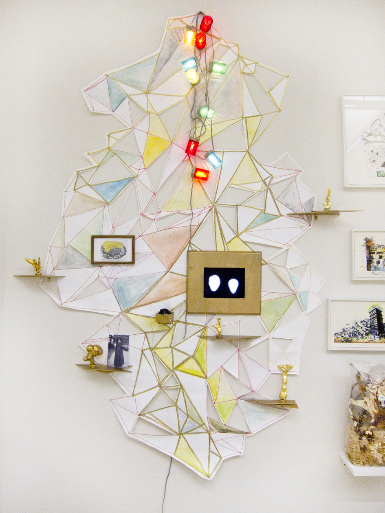
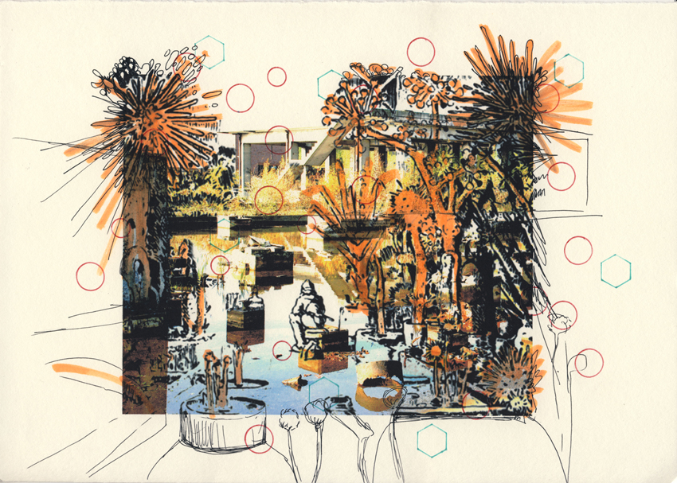
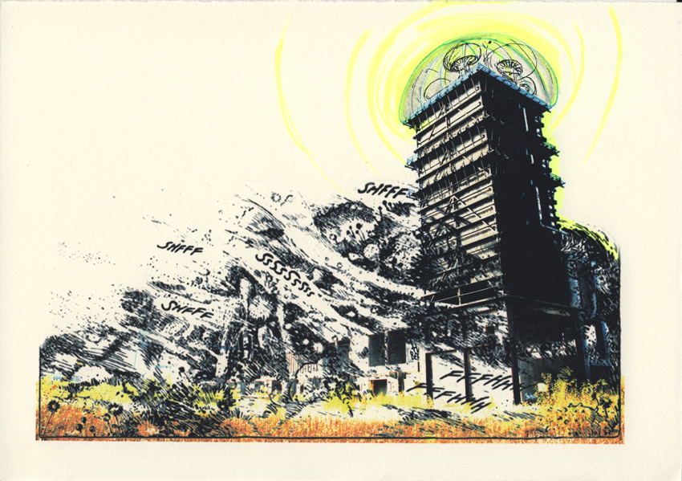
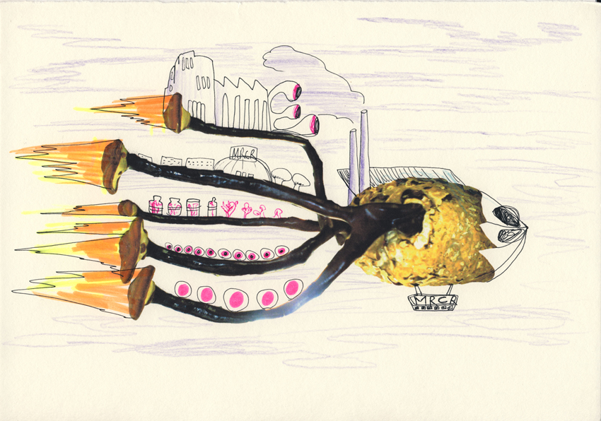

Collages 2010
1-3
in variable Installations since 2010
Publication:
About FUNGIISM -
A Mycophilian Glossary
2012
2012:
Fungi-
SpaceShrine
with gold-plated Reishis, video, drawings, light-bulbs, ...
FUNGIFICTION entwirft eine Ökotopie des Ruhrgebiets als postindustrielle Landschaft. Verseuchte Böden werden durch wundersame Heilpilze gereinigt und deren Anbau in großem Stil
heilt nicht nur Krankheiten, sondern auch die Gesellschaft, die sie bewirtschaftet.
The installation Fungifiction creates an ecotopia for the Ruhr Area as a postindustrial landscape. Contaminated soil was purified by wondrous vital mushrooms, whose cultivation on a grand scale not just cures deseases but also the farming society itself.

Remediation by meditation
mixed media on paper, 30 x 20 cm, 2010
